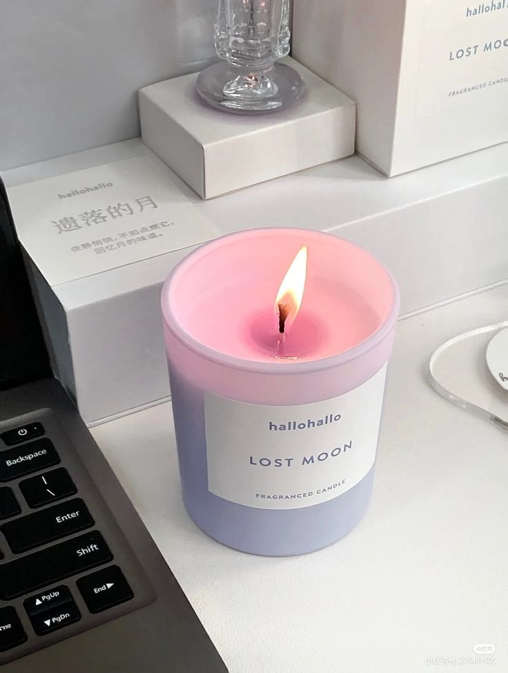
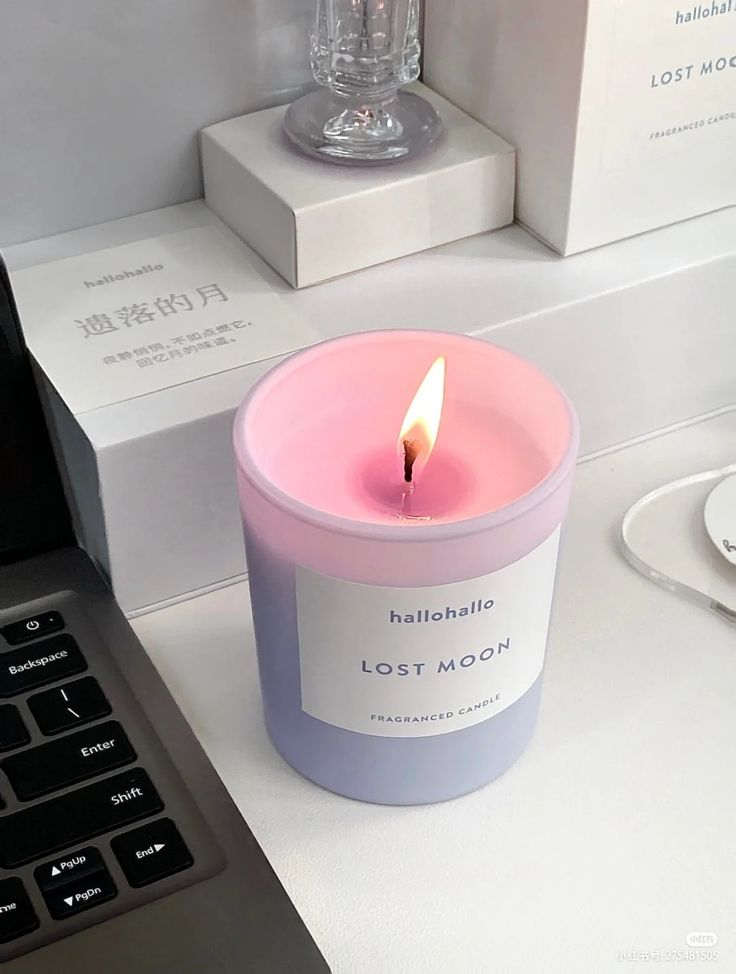

At this point, you're probably wondering how you got here. To be honest, I don't know how you got here either but since you are here, let's chill. Now we all have busy schedules, it's inevitable that we would as humans, however we all need something to take the stress off of our backs now and then. For me, I love being alone and away from society, it allows me to recharge my social battery after a long week (even though many of my friends do not truly understand this). I also have little activites and environmental settings that aid in my recovery from human interactions. Below, I have complied a list of things that help me not strangle the human race even when I'm highly annoyed:
Okay, now that we have that out of the way, let's dive into my world of relaxation and why it is a necessity to keep me sane.
Before we begin, I would like to introduce some of my stress triggers. These triggers are low key (high key) things that annoy me, but I try to cover up because I don't need to become the internet's next viral sensation. These triggers include, but not limited to:
The following list of the objects that I will talk about are in reference to my apartment at school and not at home (that's a whole different type of beast). These relaxation objects are just a few things I use to decompress after a long day, week, semester, and so on.
COFFEE, MY LOVE! IF YOU TOUCH MY COFFEE, YOU WILL DIE! Haha, I'm just kidding... (I'm not kidding, watch your back).
Anyways, coffee is one of those things that I don't necessarily need to destress but I do like to have. Like most people, coffee wakes me up and helps me get through the day but that's not the only reason why I love it so much. Coffee has many tastes and looks; it can be aesthetically pleasing or just an average cup of joe. You can add foam art, different flavored syrups, milks, and even type of beans! No two cups of coffee are the same, however, the thought of coffee and just having it in my hand after an early morning wake up makes the day worthwhile.
Okay, I lied... music is actually my true love and has been since I was a child. Music is one of those things that manages to connect you with other people regardless of location or walks of life. For me, music has always been a constant means of relaxing myself especially when a song just fits the situation you are going through so perfectly. Whether it is alternative rock, K-pop, or nostaglic songs from my childhood, music is always by my side when I need it most. Not to mention, it is also fun to belt out songs during karaoke with your friends when you get the opportunity to. Music is also a great addition to creating a relaxing environment when paired with the next item on the list...
 

Ambient lighting is another way to not only decorate your room, but to also create a mood for the night you have in store. My favorite forms of ambient lighting come in the forms of scented candles and my LED lights. Scented candles are a great way to relax and can create a welcoming feeling in any living space. Personally, I love any fruity smelling candle as well as warmer scents like vanilla and cinammon which puts me in the mood for cooler weather. However, if candles are too hostile for your nose then LED lights can also be a great alternative that can convey your mood. Feeling a little ghoulish for Halloween? Turn on the red light setting. Feeling melancholy? Use the deep blue lights. Want to study better? Try using the green lights. There are a variety of colors to choose from depending on the LED light pack that you buy and it's fun to constantly change the color every night.
In the past few years, sports has become something that I have learned to love and almost cannot function without. Whether it is football, soccer, gymnastics, baseball, lacrosse, basketball, or skateboarding, I can't help but turn my attention towards my TV when it's on. There some kind of intrigue in seeing what is going to happen next both during a live broadcast and when players are not on the field. I mean come on, who doesn't find some of these off-season storylines fascinating especially when it involves people switching teams and fighting with the coaches of their teams.
Alright, this one is pretty self-explanatory so I'll keep it short. Youtube has so much content to watch that it call literally suck you in FOR HOURS. You have no idea how many times I have procrastinated doing my school assignments because I decided "Oh, one more video won't hurt. I'll just start after this..." For me, Youtube is a nice way to relax after class and there is literally something for everybody on Youtube no matter what you like.

Last but not least we have my amazing bed! My bed is the place where I do EVERYTHING in. Any comfortable bed can be a soothing place to unwind after a stressful day (although getting out of said bed may be a problem if you are not careful). Most well used beds know to make you feel comfortable; their ability to just allow you to sink into it is almost an artform in itself. Beds can be customized with blankets, stuffed animals, pillows, and more. Sometimes, I feel like my bed just knows and understands me more than most humans ever will.
All of the listed activites and items I have outlined above are things that aid in recharging my social battery. Not everything here is going to be helpful to everybody, so I will leave a link above with help tips to relaxing and getting rid of stress. I hope reading this gave you some kind of joy or amusement and also gave you some ideas on how to relax in the future.
Back to top